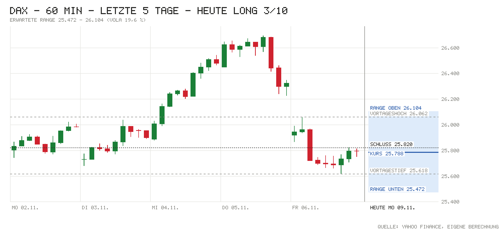

Tagesentscheidung ab 09:05 bis 17:30 Uhr
Knappes Übergewicht für eine Stabilisierung nach dem −1,92-%-Freitag: Der Nikkei holt +2,33 % auf, Brent fällt um 1,80 % auf 96,55 USD, der schwächere Euro (1,1177) hilft Exporteuren, die deutschen Exporte überraschen mit +2,0 % (Prognose 0,5 %), und SAP steigt nach einer JPMorgan-Kaufempfehlung. Laut QC Partners waren die Absicherungen am Freitag die höchsten seit April 2025, sodass weniger Anleger verkaufen müssen. Wichtigstes Gegenargument: Die Nasdaq-Futures geben −1,00 % ab (Untersuchung bei Nvidia gegen CEO Huang), die Fed-Erhöhung im Dezember ist mit 76 % eingepreist, und der große Trend steht auf Bear.
- Kurs um 09:05
- 25.788
- Erwartete Range
- 25.472 – 26.104
- Eingepreist (Tagesoption)
- ±1,23 %
Einschätzung vom Kurs um 09:05 (Median der Indikationen L&S, J.P. Morgan, UBS) bis zum Xetra-Schluss. Range = ±1 σ für die restliche Handelszeit aus der DAX-Tagesoption (ca. 68 %). Keine Anlageberatung.
Chart

Signale
| Signal | Wirkung | Stand und Einordnung |
|---|---|---|
| Vorgaben USA | Gegenwind | Freitag: S&P 500 +0,31 %, Nasdaq 100 +1,35 %, Dow −0,46 %. Futures jetzt: S&P −0,12 %, Nasdaq −1,00 %, Dow +0,32 % – Tech gibt die Erholung wieder ab (Nvidia untersucht Spionageverdacht gegen CEO Huang). |
| Eröffnung & erste Minuten | Neutral | Indikation 25.788 (−0,13 % zum Xetra-Schluss 25.820); Eröffnung und Hoch/Tief zum Abruf noch n/v. Kleine Lücke, keine Panik. |
| Asien & China | Rückenwind | Nikkei +2,33 %, Shanghai +0,32 %, CSI 300 +0,05 %, Hang Seng −0,12 %. Japan erholt einen Teil des Freitagsverlusts. |
| Datenüberraschungen | Rückenwind | DE Exporte Sept. +2,0 % vs. Prognose 0,5 %, Importe +4,2 % vs. 0,5 % (Handelsbilanz 15,6 Mrd. vs. 19,2 Mrd.). US Payrolls Freitag 165K vs. 65K, Michigan 51,0 vs. 48,1. |
| Zinserwartung | Gegenwind | Fed 09.12.: 76 % für +25 Bp. (Freitag früh 62 %) nach starkem Arbeitsmarkt; EZB-Einlagensatz 2,50 %. |
| Renditen | Neutral | Bund 10J 3,24 % (−1 Bp.), US 10J 4,85 % live (−1 Bp.; 1 Woche: −9 Bp.). |
| Kreditstress | Neutral | FRED n/v; Ersatz: HYG −0,06 %, LQD −0,12 % – kein Stress. |
| Öl & Dollar | Rückenwind | Brent 96,55 USD (−1,80 %) – Trump hält neue Iran-Angriffe für sehr unwahrscheinlich; EUR/USD 1,1177 (−0,46 %). |
| Trend | Neutral | Über 21-T. (25.607), 50-T. (25.556) und 200-T.-Schnitt (24.925) – kurzfristig intakt; großer Trend aber Bear seit 22.10. (Gegenwind für Long). |
| Positionierung | Rückenwind | Absicherungen am Freitag laut QC Partners die höchsten seit April 2025. COT 03.11.: Hedgefonds im S&P-Future netto −372.318 (+28.286). Gegenläufig stützend (eigene Einschätzung). |
| Unternehmensnachrichten | Rückenwind | SAP vorbörslich fester nach JPMorgan-Kaufempfehlung; Hannover Rück Q3 über Erwartung. Belastung: Rheinmetall nach Gewinnwarnung auf Tief seit Frühjahr 2025. |
| Profi-Sicht | Neutral | ING: Dollar-Rally vom Freitag überdehnt, braucht mehr Risikoscheu; keine Aktienaussage. |
| Termine bis 17:30 | Neutral | 10:30 Sentix, 14:40 Fed-Mitglied Bowman, 16:00 Goolsbee und US-Großhandelslager – kein großer Termin. |
Großer Trend (3-Monats-Momentum)
- Stand
- Bear
- Seit
- 22.10. (5 Wechsel in 3 Monaten)
- Schluss 06.11.
- −2,16 % vs. Zins +0,60 %
- Heute dreht es bei Schluss über
- 26.489 (jetzt −2,53 %)
Auch mit dem Kurs von jetzt bliebe das Signal Bear; die 3-Monats-Rendite liegt seit dem Freitagsverlust wieder klar unter dem Geldmarktzins. Bull = Rendite der letzten 3 Monate über dem Geldmarktzins, Bear = darunter. Regel: Rendite der letzten 63 Handelstage (≈ 3 Monate) gegen den EZB-Einlagensatz, jeden Tag zum Schluss neu entschieden, Zeitrahmen Tageskerzen (nach Antonacci 2014, dort monatlich über 12 Monate; täglich entschieden dreht es öfter falsch). Keine Anlageberatung.
Bilanz von gestern
06.11.: Long 2/10 – Richtung falsch, −120 Punkte (Kurs zur Notiz 25.940, Schluss 25.820, Hoch 26.062, Tief 25.618). Range ±279 um den Kurs zur Notiz getroffen; bisher 67 % von 3 Tagen getroffen (Soll ca. 68 %). Gesamt seit Start: 3 Einschätzungen, Richtung richtig 0 %, Summe −812 Punkte bis Schluss (Schnitt −271).
Marktlage
| Markt | Stand | Veränderung |
|---|---|---|
| DAX (Schluss 06.11.) | 25.820,36 | −1,92 % |
| DAX (Eröffnung heute) | n/v | n/v |
| DAX (jetzt, Kurs zur Notiz 09:05) | 25.788 | −0,13 % |
| S&P 500 (Schluss 06.11.) | 7.376,86 | +0,31 % |
| Nasdaq 100 (Schluss 06.11.) | 26.989,99 | +1,35 % |
| Dow Jones (Schluss 06.11.) | 51.285,73 | −0,46 % |
| US-Futures (S&P / Nasdaq) | 7.393,00 / 26.815,50 | −0,12 % / −1,00 % |
| Nikkei 225 | Eröffnung 57.961 → Schluss 58.776 | +2,33 % |
| Shanghai Composite | Eröffnung 3.659 → Schluss 3.661 | +0,32 % |
| CSI 300 | Eröffnung 4.066 → Schluss 4.056 | +0,05 % |
| Hang Seng | Eröffnung 24.626 → aktuell 24.452 | −0,12 % |
| EUR/USD | 1,1177 | −0,46 % |
| Brent (USD/Barrel) | 96,55 | −1,80 % |
| Gold (USD/Unze) | 4.095,60 | +0,51 % |
| VIX (Schluss 06.11.) | 25,64 | −9,01 % |
China: kaum bewegt; die Verbraucherpreise stiegen im Oktober nur um 0,7 % (Prognose 0,8 %, wegen fallender Lebensmittelpreise), die Erzeugerpreise um 5,7 % (ING). DAX-Eröffnung lag zum Datenabruf (Yahoo, bis 15 min verzögert) noch nicht vor. Kein Feiertag.
Anleihen & Zinsen
| Markt | Stand | Veränderung |
|---|---|---|
| Bund 2J | 2,96 % | +1 Bp. (vs. Bundesbank 06.11.: 2,95 %) |
| Bund 10J | 3,24 % | −1 Bp. |
| US-Treasury 2J | 4,51 % | ±0 Bp. (live vs. offiziell 06.11.) |
| US-Treasury 10J | 4,85 % (live) / 4,86 % (offiziell 06.11.) | −1 Bp.; 1 Woche: −9 Bp. |
| Fed, Sitzung 09.12. | Erhöhung um 25 Bp. erwartet | 76 % Wahrscheinlichkeit |
| EZB-Einlagensatz | 2,50 % | zuletzt +25 Bp. (16.09.) |
| Euro-Hochzins-Aufschlag | n/v (FRED) | n/v |
| US-Hochzins (Ersatz: HYG) | 77,23 USD | −0,06 % (Tag) |
Termine heute
- 08:00 Deutschland: Exporte Sept. – Ist +2,0 % vs. Prognose 0,5 % · zuvor −0,4 %; Importe Ist +4,2 % vs. 0,5 %; Handelsbilanz Ist 15,6 Mrd. vs. 19,2 Mrd.
- vorbörslich Quartalszahlen: Hannover Rück (Q3-Gewinn 695 Mio. € vs. Konsens 638 Mio., Prognose bestätigt); außerdem GEA
- 10:30 Eurozone: Sentix-Konjunkturindex – Prognose 2,1 · zuvor 2,7
- 12:00 Bundesbank-Vizepräsidentin Buch spricht
- 14:40 Fed-Mitglied Bowman spricht
- 16:00 USA: Großhandelslager – Prognose 0,6 % · zuvor 0,6 %; Fed-Mitglied Goolsbee spricht
- ganztägig Euro-Finanzminister sichten Kandidaten für die Lagarde-Nachfolge; G7-Außenminister in Paris
Nachrichten zu DAX-Werten
- SAP: Vorbörslich fester nach Kaufempfehlung von JPMorgan; seit dem Sommer +72 %, am Donnerstag Jahreshoch. Einschätzung: positiv, als größter DAX-Wert wichtigste Stütze.
- Hannover Rück: Q3-Nettogewinn 695 Mio. € (Vorjahr 651 Mio., Konsens 638 Mio.), getragen vom Kapitalanlageergebnis; Jahresziel 2,7 Mrd. € bestätigt. Einschätzung: positiv, kann den von JPMorgan-Abstufungen belasteten Versicherern helfen.
- Rheinmetall: Nach erneuter Gewinnwarnung auf dem tiefsten Stand seit Frühjahr 2025, vorbörslich weiter schwächer; Bank of America streicht die Kaufempfehlung, Ziel 900 €. Einschätzung: negativ, Druck hält an.
- Infineon: Keine neuen Nachrichten, Jahreszahlen morgen (10.11.); Nasdaq-Futures −1 % belasten Chipwerte. Einschätzung: leicht negativ (eigene Einschätzung).
Profi-Sicht & Positionierung
- ING THINK: Die Dollar-Rally vom Freitag sei gemessen an den kurzfristigen Treibern überdehnt; ohne neue Risikoscheu erwartet ING EUR/USD wieder über 1,120 (Euro um 2,1–2,3 % unterbewertet). Ein erwartungsgemäßer US-Verbraucherpreisbericht halte die Fed-Erhöhung im Dezember im Spiel (FX Daily). Chinas Inflation kühlte im Oktober auf 0,7 % ab (Snap).
- Positionierung (COT, Stand 03.11.): Hedgefonds im S&P-Future netto −372.318 (+28.286), Asset Manager +928.584 (+5.135); Nasdaq-Hedgefonds leicht netto long (10.073). Euro: Asset Manager bauen Long ab (−28.324). Daten vor dem Tech-Einbruch; kein Extrem.
Quellen
- Marktdaten per Skript: Amber Terminal / Yahoo Finance (Kurse, Futures, HYG/LQD), onvista (Indikationen, VDAX), Eurex (DAX-Tagesoption ODAP), Nasdaq (Kalender), CNBC / Bundesbank / US-Treasury (Renditen), CFTC (COT), ING THINK; FRED (Kreditaufschläge) nicht erreichbar
- onvista/dpa-AFX: Keine Erholung nach der Kurskorrektur
- onvista/Reuters: Dax dürfte niedriger starten – KI-Sorge im Fokus
- onvista/dpa-AFX: Börsentag auf einen Blick
- finanznachrichten: Hannover Rück übertrifft Erwartungen und bestätigt Ausblick
- ING THINK: FX Daily – Dollar rally needs more risk-off fuel
- ING THINK: China’s inflation cooled in October